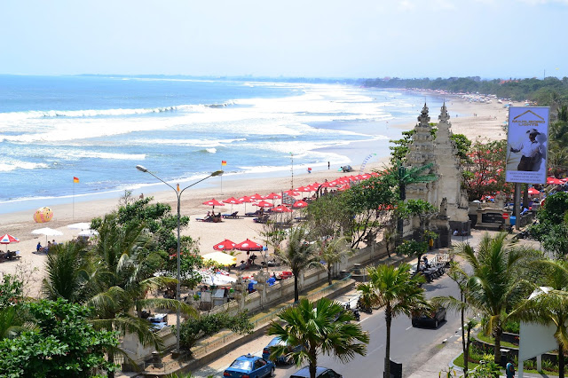

Tugas Ke-4
Nama Lengkap : Talita Thereyzia Malabar
NIM : 202055202003

Deskripsi :
Tempat Wisata Favorit Wisatawan Yang Mengunjungi Pulau Bali - Halo teman-teman kali ini kita akan membahas mengenai sejarah dari Pantai Kuta terlebih dahulu ya sebelum nantinya kita membahas mengenai berlibur di Pantai Kuta Bali dan berapa sih tiket masuk serta fasilitas yang ada di pantai ini.